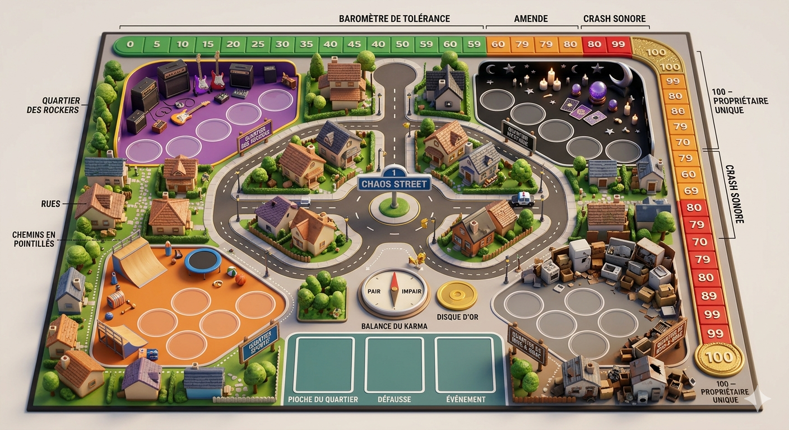

Nouvelle partie
Combien de familles emménagent à Chaos Street ?
🎲 Aléas du voisinage
Pas de paquet sous la main ? Tire une carte Action au hasard.
🃏 Le deck
📖 Règles du jeu
« Ici, on ne demande pas de baisser le son. On coupe le courant. »
Quatre familles infernales emménagent à Chaos Street. Faites craquer vos voisins pour devenir le Propriétaire Unique du quartier !
🎯 But du jeu
Atteindre 100 points de Nuisance sur le Baromètre de Tolérance, tout en gardant au moins 4 membres de ta famille en jeu.
🧰 Matériel & mise en place
- 24 cartes Membres (6 par famille), 8 cartes Action, 2 Événements.
- 1 Baromètre de Tolérance (0 → 100) + 1 pion par joueur.
- Chaque joueur choisit sa famille et prend ses 6 cartes.
- Mélange les Actions au centre (la Pioche), distribue 5 cartes à chacun.
- Tous les pions démarrent à 0. Le plus bruyant commence.
🔄 Déroulement d'un tour
À ton tour, fais UNE action :
- POSER un membre devant toi → ton score monte de sa Nuisance.
- ACTION → joue une carte Action pour semer le chaos.
🔁 Tu peux défausser un membre de ta main pour activer son COUP BAS à tout moment, même hors de ton tour.
En fin de tour, repioche jusqu'à avoir 5 cartes.
⚖️ Ordre de priorité
- Interruption — Carte Action jouée hors-tour
- Réaction — Coup Bas (défausse d'un membre)
- Résolution — Pouvoir d'un membre posé
- Majorité — Pouvoir de famille (3+ membres)
📊 Baromètre & Crash Sonore
- Chaque membre posé fait monter ta Nuisance.
- À partir de 3 membres d'une famille → son Pouvoir de Quartier s'active.
- ⚠️ Si tu dépasses 80 → CRASH SONORE : défausse la moitié de tes membres (choisis par les adversaires) et ton score retombe à 40.
- 🚓 Une amende (Police) fait reculer de 20 les joueurs au-dessus de 60.
🏁 Fin de partie
La partie s'arrête dès qu'un joueur a 100+ points ET au moins 4 membres en jeu. Il devient le Propriétaire Unique de Chaos Street ! Sinon, il doit redescendre et se stabiliser avant de pouvoir gagner.
🎸🔮🛹🔧 Les 4 familles
- Electro-Rockers — saturer le quartier (chaos / défausse).
- Excentriques de l'Occulte — manipuler le destin (pioche / inversion).
- Sportifs Extrêmes — vitesse & esquive (hors-tour / protection).
- Collectionneurs de Bazar — recyclage & asphyxie (défausse / blocage).
💡 Astuce de pro
Ne garde pas tes cartes Action trop longtemps : elles ne rapportent aucun point. Sacrifie tes membres pour protéger ta stratégie, et lâche tes Coups Bas au moment où ton voisin croit avoir gagné !